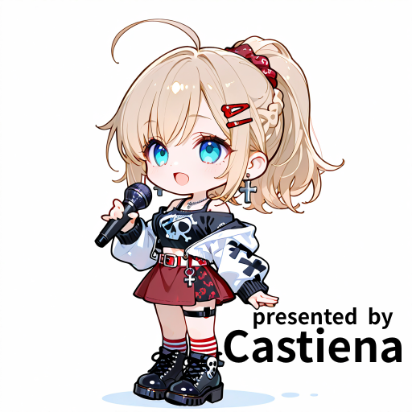

YouTubeのチャンネル名・キーワード、または別サイトの検索URLを登録できます。
検索URLは曲名を入れる位置を {query} に置き換えてください。別サイトは検索リンクで開きます。
APIキーはここで入力してください。チャットへの共有は不要です。既定ではこのタブを開いている間だけ保持します。
Google Cloudで「ウェブサイト」の制限と「YouTube Data API v3」のAPI制限を設定してください。ブラウザから送信するキーは通信内容から確認できます。
抽選・一覧は絞り込んだ曲が対象です。条件を変えると抽選履歴がリセットされます。
名前の変更は登録曲にも反映。削除は曲から分類だけを外します。
YouTube候補は選択したキーワードとガイドメロなしの表記を優先します。無料利用・配信利用の可否は各動画の説明欄で確認してください。
全角・半角、大文字・小文字、空白や記号、かなの違いと、軽微なタイプミスを調べます。別の曲の場合もあるので確認して整理してください。